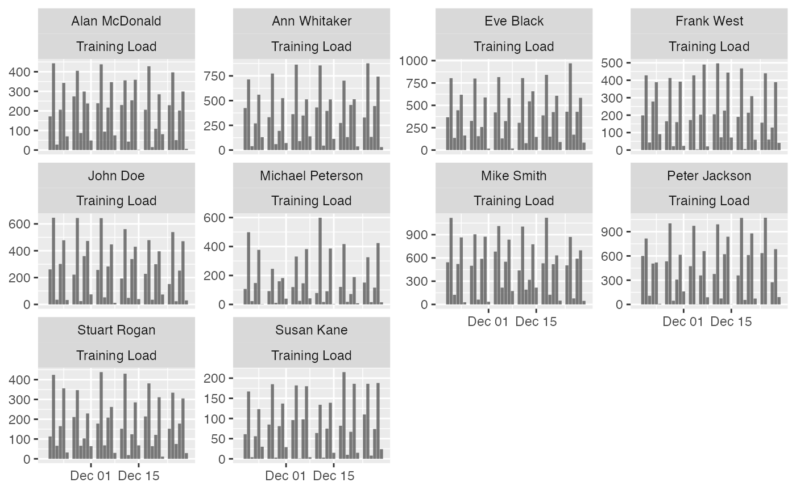
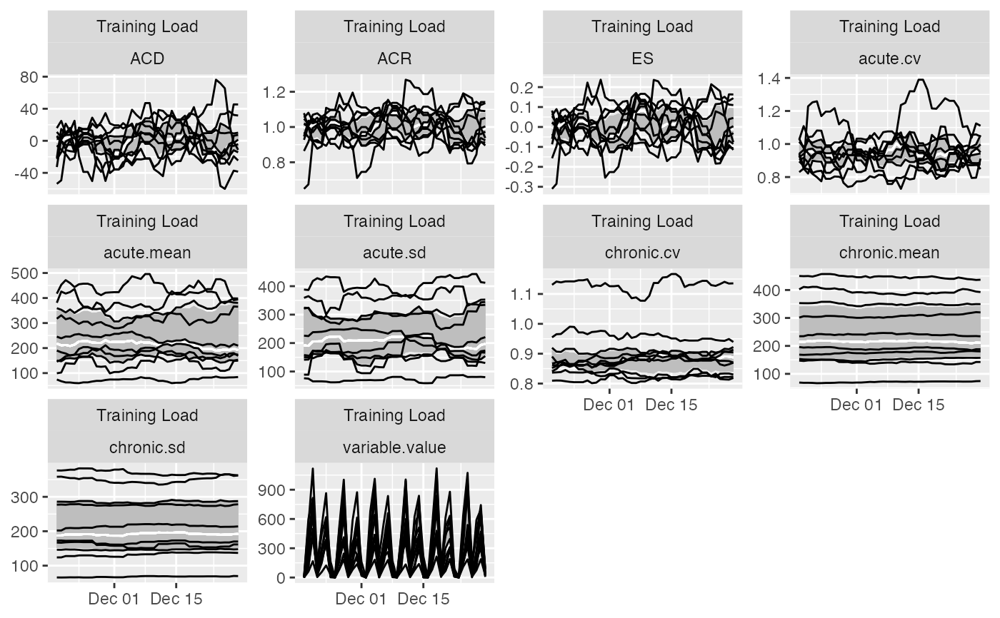
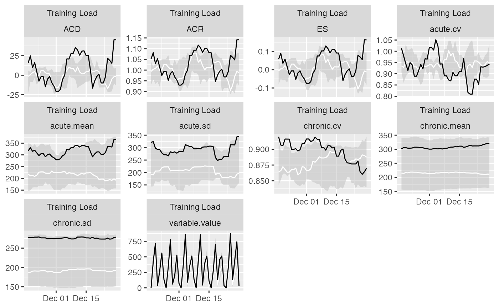

Prepare Athlete Monitoring Data
prepare( data, athlete, date, variable, value, day_aggregate = function(x) { sum(x, na.rm = TRUE) }, NA_session = NA, NA_day = NA, acute = 7, chronic = 28, rolling_fill = NA, rolling_estimators = function(x) { c(mean = mean(x, na.rm = TRUE), sd = stats::sd(x, na.rm = TRUE), cv = stats::sd(x, na.rm = TRUE)/mean(x, na.rm = TRUE), conf = sum(!is.na(x))/length(x)) }, posthoc_estimators = function(data) { return(data) }, group_summary_estimators = function(x) { c(median = stats::median(x, na.rm = TRUE), lower = stats::quantile(x, 0.25, na.rm = TRUE)[[1]], upper = stats::quantile(x, 0.75, na.rm = TRUE)[[1]]) } )
Arguments
| data | Data frame |
|---|---|
| athlete | Name of the column in the |
| date | Name of the column in the |
| variable | Name of the column in the |
| value | Name of the column in the |
| day_aggregate | Function for aggregating multiple day entries. Defaults is |
| NA_session | What value should be imputed for missing values in |
| NA_day | What value should be imputed for missing days? Default is |
| acute | Duration of the acute rolling window. Default is 7 |
| chronic | Duration of the chronic rolling window. Default is 7 |
| rolling_fill | Value used to fill start of the rolling windows. Default is |
| rolling_estimators | Function providing rolling estimators. See Details |
| posthoc_estimators | Function providing post-hoc estimators. See Details |
| group_summary_estimators | Function providing group summary estimators. See Details |
Value
Object of class athletemonitoring
Examples
# Load monitoring data set data("monitoring") # Filter out only 'Training Load' monitoring <- monitoring[monitoring$Variable == "Training Load", ] # Convert column to date format (or use numeric) monitoring$Date <- as.Date(monitoring$Date, "%Y-%m-%d") # Run the athlete monitoring data preparation prepared_data <- prepare( data = monitoring, athlete = "Full Name", date = "Date", variable = "Variable", value = "Value", acute = 7, chronic = 42, # How should be multiple day entries summarised? day_aggregate = function(x) { sum(x, na.rm = TRUE) }, # Rolling estimators for Acute and Chronic windows rolling_estimators = function(x) { c( "mean" = mean(x, na.rm = TRUE), "sd" = sd(x, na.rm = TRUE), "cv" = sd(x, na.rm = TRUE) / mean(x, na.rm = TRUE) ) }, # Additional estimator post-rolling posthoc_estimators = function(data) { data$ACD <- data$acute.mean - data$chronic.mean data$ACR <- data$acute.mean / data$chronic.mean data$ES <- data$ACD / data$chronic.sd # Make sure to return the data return(data) }, # Group summary estimators group_summary_estimators = function(x) { c( "median" = median(x, na.rm = TRUE), "lower" = quantile(x, 0.25, na.rm = TRUE)[[1]], "upper" = quantile(x, 0.75, na.rm = TRUE)[[1]] ) } ) # Get summary prepared_data#> Athlete monitoring data with the following characteristics: #> #> 10 athletes: #> Alan McDonald, Ann Whitaker, Eve Black, Frank West, John Doe, Michael Peterson, Mike Smith, Peter Jackson, Stuart Rogan, Susan Kane #> #> 363 days: #> From 18263 to 18625 #> #> 1 variables: #> Training Load #> #> 10 estimators: #> variable.value, acute.mean, acute.sd, acute.cv, chronic.mean, chronic.sd, chronic.cv, ACD, ACR, ES#> # A tibble: 10 x 13 #> athlete variable `Day entries` Missing `Start date` `Stop date` Mean SD #> <chr> <chr> <int> <int> <date> <date> <dbl> <dbl> #> 1 Alan M… Trainin… 312 51 2020-01-02 2020-12-29 202. 133. #> 2 Ann Wh… Trainin… 312 51 2020-01-02 2020-12-29 353. 247. #> 3 Eve Bl… Trainin… 312 51 2020-01-02 2020-12-29 401. 257. #> 4 Frank … Trainin… 312 51 2020-01-02 2020-12-29 218. 155. #> 5 John D… Trainin… 312 51 2020-01-02 2020-12-29 272. 207. #> 6 Michae… Trainin… 312 51 2020-01-02 2020-12-29 177. 167. #> 7 Mike S… Trainin… 312 51 2020-01-02 2020-12-29 514. 344. #> 8 Peter … Trainin… 312 51 2020-01-02 2020-12-29 470. 330. #> 9 Stuart… Trainin… 312 51 2020-01-02 2020-12-29 177. 122. #> 10 Susan … Trainin… 312 51 2020-01-02 2020-12-29 87.6 68.8 #> # … with 5 more variables: Min <dbl>, Max <dbl>, Median <dbl>, IQR <dbl>, #> # MAD <dbl>## Plots # Table plot # Produces formattable output with sparklines plot( prepared_data, type = "table", # Use to filter out estimators estimator_name = c("acute.mean", "chronic.mean", "ES", "chronic.sd", "chronic.cv"), # Use to filter out athlete # athlete_name = NULL, # Use to filter out variables #variable_name = NULL, # Show last entries last_n = 42, # Round numbers digits = 2 ) # Bar plot # To plot group average plot( prepared_data, type = "bar")#>#> Warning: Removed 6 rows containing missing values (geom_bar).#> Warning: Removed 42 row(s) containing missing values (geom_path).#> Warning: Removed 42 row(s) containing missing values (geom_path).#> Warning: Removed 60 rows containing missing values (geom_bar).#> Warning: Removed 420 row(s) containing missing values (geom_path).#> Warning: Removed 420 row(s) containing missing values (geom_path).# To filter out athletem variable and add Acute and Chronic lines to the group average: plot( prepared_data, type = "bar", # To filter out athletes # athlete_name = NULL, # To filter out variable # variable_name = NULL, # Add acute mean acute_name = "acute.mean", # Add chronic mean chronic_name = "chronic.mean", # Plot last n entries/days last_n = 42)#>#> Warning: Removed 6 rows containing missing values (geom_bar).# If you want to plot for each athlete, use trellis=TRUE plot( prepared_data, type = "bar", acute_name = "acute.mean", chronic_name = "chronic.mean", last_n = 42, trellis = TRUE)#> Warning: Removed 60 rows containing missing values (geom_bar).# Line plots # These plots represent summary of the rollins estimators plot( prepared_data, type = "line", # To filter out athletes # athlete_name = NULL, # To filter out variables # variable_name = NULL, # To filter out estimators # estimator_name = NULL, # Tell graph where the lower group estimator is # which is in this case 25%th percentile of the group group_lower_name = "group.lower", # The name of the centrality estimator of the group group_central_name = "group.median", # Tell graph where the upper group estimator is # which is in this case 75%th percentile of the group group_upper_name = "group.upper", # Use trellis if you do not plot for a single individual trellis = TRUE)# Previous chart looks messy because it plot all athletes # To avoid that, filter out only one athlete plot( prepared_data, type = "line", # To filter out athletes athlete_name = "Ann Whitaker", group_lower_name = "group.lower", group_central_name = "group.median", group_upper_name = "group.upper", trellis = TRUE)